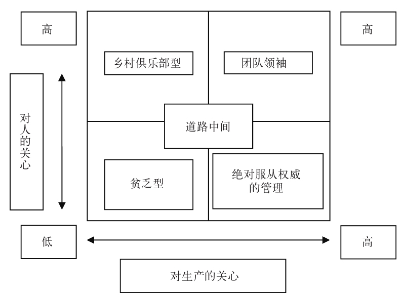
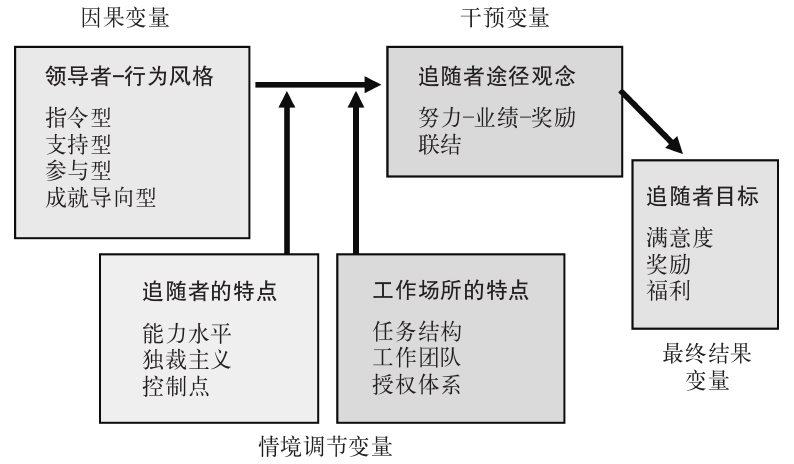

诸位或许还记得第三章中提到的被公认为第一位“现代”领导力学者的托马斯·卡莱尔和他的“伟人”观点。但既然这种观点的经验支持极其有限，理论依据又明显不足，为什么它至今仍有众多拥趸呢？毋庸讳言，原因之一就是许多人至今还在为复杂问题寻找简单的解决方案：当信贷紧缩开始破坏整个经济基础时，我们不去深入考察形势的复杂性，反而更想找到一个替罪羊（我们会在下一章再回来考察这种现象）。寻找英雄（及反派）还能让我们逃避责任，对领导者保持一种巨婴心态，这种心态很可能源自我们幼年时期与父母或类似权威人物建立的关系。
尽管如此，到第二次世界大战结束之时，为应对战时军队中军官选拔过程出现的问题，早期的特质理论有了一定的发展演变，开始提出不同于“伟人”理论的其他道路。这些早期理论指出，领导者拥有不同于非领导者的特殊素质/品质，这些似乎包括：
但没过多久，人们就明显看到，这些特质需要放在特定的情境之中，方能被认定为影响领导力的重要因素。的确，另一个明显的事实是，很多得出负相关结论的研究尚未发表，因而整个领域存有偏见。尽管每一项研究（跟当代的胜任素质模型一样）产生了明显不同的特质，人们仍然坚持想当然地认为，只要我们考察得足够深入，就一定能发现传说中的金奖券——那一串真实存在 的特质。然而既然我们很少把成功和不成功的领导者放在一起进行对比，既然我们很少拥有无可争议的证据来证明领导者的行为对组织业绩提升起到了客观上可以衡量的作用，就仍然有两个问题亟待解决。
首先，对胜任素质的测试是客观的吗？例如，第二次世界大战期间，平民进入美国武装部队各部门服役之前进行的智商测试系统，就跟任何教育或其他智商测试一样漏洞百出——其结果表明经过测试的人中有四分之一是文盲，而一半白人和90%美籍非裔人士的智力年龄还不足13岁。由于那些测试包括像“斯克鲁奇是以下哪部小说中的人物：《名利场》、《圣诞颂歌》、《罗慕拉》还是《亨利五世》？”以及“哪一个术语被用于指代文艺复兴时期艺术的空间透视法？”这样的问题，我们可以确信，这些测试根本未能体现出很强的科学和文化客观性。但现实结果是一直到战争即将结束之时，大多数美籍非裔士兵才得以进入直接作战部队。
其次，到现在为止，我们甚至根本没有关注追随者。如果有一个根据特质来说天赋极高的领导者，但一群下属根本没兴趣追随该领导者，又当如何？于是就产生了另一个问题：特质表现为某一个人所持的资产，而领导力是一种关系。这有点像从商业水族馆中买来最好的锦鲤，但忘了家中根本没有水塘来养它。
就在盟军部队还在忙着罗列选拔军官的一长串特质的同时，库尔特·莱温 [41] 开始了一套实验，想看看领导者的行为，而不是他或她的特质，对组织成功有无任何影响。莱温本人就是从纳粹德国逃出来的。在其著名的“少年俱乐部实验”中，莱温总结道，一般来说，当独裁领导者在场时，少年们（追随者们）会服从他的领导，而当他不在场时，他们就会逃避劳动。相反，采取自由放任做法的领导者无论在场还是不在场，少年们都不会干多少活儿，而民主领导者无论在不在场，都能让（大致）一半少年富有成果地劳动。结论是，民主的领导者能在追随者中产生最高的满意度——但同时指出，效率最高的追随者还是在独裁者当场强迫下劳动的那一群人。
这种对满意度和生产效率的区分后来成为很多研究的基础。密歇根大学的研究表明，领导者要么是生产导向 ——其追随者被看成是生产要素，是为达到某一目的所使用的手段；要么是雇员导向 ——其追随者被看成是一项关键的资源。俄亥俄州立大学对空乘人员行为的调查后来又再现了这一基本的任务/人员之间的二元对立（不过他们称之为“定规”和“关怀”），并得出结论，领导者能够同时进行两种活动，而不必做出非此即彼的选择。布莱克和莫顿 [42] 在其“管理方格”中很好地体现了这一二元对立，图16就重现了该管理方格。其中，领导者要么脱离任务和人，体现出一种“贫乏型”风格；要么对人而不是任务表现出较大关怀——仿佛他们在领导一个乡村俱乐部，其存在的唯一目的是为成员谋福利；要么可能不顾及人的需求而只关注任务——这是一种绝对服从权威的管理风格；他们当然可以采取图表正中间的做法，或者最后一种，就是对任务和人同时表现出极大的关怀，采取“团队领袖”的工作作风。有趣的是，自1960年代中期问世以来，这一方格就颇受欢迎，但其关于团队领袖是可能的亦是最优的管理风格的关键假设，迄今还没有显著的实证支持。

图16 布莱克和莫顿的管理方格
就在管理方格开始流行的同时，随着关注焦点从领导者的风格选择（任务或人）转移到情境能够在多大程度上决定哪一种风格实际有效，发生了另一个明显的观念转变——这就是权变理论的起源。
弗雷德·菲德勒 [43] 以他的“最不受欢迎同事”评价方法开启了这场变革，其保留了任务/关系的二元对立。菲德勒假设领导者们要么看重任务要么看重关系，且这一点是无法改变的，但该倾向是否有效，取决于情境是否有利。因此这可以进行如下定义：
这些变量继而会生成有利、不利或中性的情境。
有利的领导情境包括：
在此情境中，群体期待直接被告知应该做什么，而不希望被征询意见，因此任务导向的领导风格最为有效。
不利的领导情境包括：
在此情境中，群体也同样期待被告知应该做什么而不希望被征询意见，因此（仍然是）任务导向的领导风格最为有效。只有在中性情境中——也就是位处有利和不利情境之间，因而领导者有适度的权力、适度的支持和较为复杂的任务时——才有必要征询意见以确保被采纳，在且只有在这种情境下，关系导向的领导风格才最为有效。
那么当领导者们发现自己处在“错误”的情境中又当如何呢？这么说吧，由于领导者无法改变自身的倾向性——这是菲德勒的观点——他们所能做的只有试图改变情境。何以如此？为什么在有利或不利的情境下，追随者们需要的都应该是任务型领导呢？菲德勒的解释是，这一切并非都能解释清楚；的确有一个“黑匣子”在起作用，所以我们不知道何以如此，但事实的确就是这样。更合适的说法是，它在一定的限度之内有效：至少现在情境是人们的关注焦点，也就是说我们家里有养锦鲤的水塘，这就意味着，领导者或许很难在一切情境中都获得成功。但我们尚不清楚某种性格设定能否预测行为，遑论领导成功与否，而且我们看似仍然没有太过关注追随者的性质或其与领导者的关系。此外正如第二章所述，领导者之所以能够成功，部分取决于他们能够重新架构“情境”，令其看似不同，并因而可以作不同的解读。
赫塞和布兰查德 [44] 的“情境领导力理论”显然认可领导力中确实存在上述多个变量，但他们认为，领导者根本不可能处理这么多错综复杂的信息，因而应该关注最重要的变量——领导者与追随者之间的关系，因为如果追随者决定弃领导者而去，再说什么都是枉费口舌。这继而促使他们指出，领导者的行为应该根据追随者的成熟水平加以调整——后者会随着时间发生变化，且往往遵循以下轨道：
实践证明，这是高管市场上最成功的领导力模型之一：它直观、简单而易懂，但它的问题同样是很少有实证支持它的有效性。一个原因是，这一模型意味着其所关注的追随者总体成熟水平有可能根本不存在；换句话说，追随者们所代表的成熟水平不一，不会仅仅反映为一个总分常模。另一个原因是他们并没有阐明其所谓的“成熟”到底是指什么——它跟信心、技能、努力、动机、顺从有关吗？如果是这样的话，这些变量的权重又各是多少？此外，我们这里使用的是谁对于追随者成熟度的解读：是领导者的，还是追随者的？领导者的（不）成熟又当如何——谁说他们跟这一等式无关了？
在“领导——成员交换理论”——这个术语最初的叫法更加魅诱：“垂直对子联结理论”——看来，领导者无法跟追随者们建立一种“均衡”的关系，相反，他们跟不同的下属建立不同的关系，但随着时间流逝，这些关系可以分成两个明显的类别，每个类别都是通过领导者的初始行动而建成的。一是内集团，领导者会给他们更多的自治权，让他们更多地负责结构散乱的任务，如果集团对此反应积极，那么会有更多的互惠行动来确认这一集团的成员们就相当于行政长官的“代理人”。但如果领导者没有让其他下属看到同样的可能性，或者如果领导者认为他们的反应不够有建设性，那么久而久之，这些下属就会变成“外集团”，也就相当于“临时工”而非代理人。这一集团跟领导者的关系纯粹建立在合同（或交易）的基础上：他们到点出勤、工作敷衍、按劳领薪，回到家里就把工作抛诸脑后了。不过，虽说他们不用像内集团成员那样承担繁重的工作职责，他们对自己的就业前景却没有把握——因为他们将是最先丢掉工作的一批人。
同样，这一直觉观念迄今也只有极少量的实证支持，何况外集团成员的愤怒有可能会抵消领导者与内集团建立良好关系所带来的裨益。此外，如前一章所述，外集团很少能够代表与内集团的原型化相关的特征，虽然其建立往往会对整个组织的有效性起到反作用，但它事实上或许是群体的一种“正常”反应，甚至是社会生活不可避免的一个方面。因此对于领导者来说，成功的真正秘诀是不是既能绕开所有这些问题领域，同时又能把尽可能多的集团成员动员起来？
或许是吧，或许最复杂的权变方法就是与罗伯特·豪斯 [45] 的途径——目标理论有关的方法。这里，领导者的任务是为追随者铺平通往共同目标的道路，他要清除路障，还要利用以下四种领导行为风格之一，来达到动员追随者的目的：
相应地，领导者的影响力也取决于两套变量：工作环境（情境），包括任务结构、工作团队和授权体系；以及追随者，包括他们的能力水平（以及对自身能力的认知）、其对于独裁权力的态度、对归属感的需求、对结构的需求以及控制点（有强烈内控倾向的人认为自己能够控制事件的发展，因而更喜欢参与型领导；外控倾向较强的人则认为事件是由命运或运气等因素决定的，更喜欢指令型领导）。
该模型的因果解释源于期望理论，后者认为当以下三个因素确定时，激励是在努力程度给定时的一个理性选择：
在这种观点看来，任何领导者采用或综合采用任何风格都无关紧要——所以它不是一种特质方法，而是一种适应行为方法。不过，存在一种假定的倾向——大多数人都有其偏爱的风格，该风格有可能适合、也有可能不适合形势的要求。如果看到这里，你已经开始被这么多变量搞得晕头转向了，图17尝试以图表的方式说明得直观清楚一些。

图17 途径—目标理论
所有这些表明，领导者的行为应该与追随者的要求和形势的特征相匹配，他或她应该选择适当的领导行为风格来帮助追随者实现其目标。因此：
看起来这倒是相对直观——那么背后有什么隐患呢？这么说吧，有三重隐患。第一，这么多变量堆积起来，可能会让人对领导力进行考察无从下手：即便我们能够获得客观的标尺来衡量其中的每一种变量，等到把数据收集完整了，情况很可能又变得面目全非。第二，即使这意味着可以在衡量人类行为时具备一定的客观性，我们似乎也很难客观。第三，事实上追随者希望从领导者那里获得的东西可能非常相似——他们希望被认可、被保护。问题是领导者——当然几乎每一个领导者在等级结构的不同层面上同时也是追随者——看到的是一个全然不同的“现实”。领导者往往认为完成任务是至关重要的，而且尽管领导者可能很关心追随者，但他们（因心系任务而始终采取）的寄望姿态仍然会被追随者看成是对自己漠不关心。讽刺的是，正是这些（对追随者）“漠不关心”的领导者，往往认为位于自己之上的领导者同样缺乏对追随者的关注。这一普遍倾向是否也能够解释为什么追随者们总是对魅力型领袖万分景仰呢？
魅力是一种“天赐的能力或天赋”，其词源是希腊词语Kharisma ，来自kharis ，意为“天恩”或“恩惠”。事实上，大多数人如今都用这个词来指代某个非同寻常之人，其所拥有的某种品质或威信能够对很大一群人产生影响或给后者以激励。在就魅力问题撰写过重要文本的德国社会学家马克斯·韦伯看来，这些人的威信是大多数人无法理解的，也是非常罕见的。因此韦伯所写的魅力——我应该称之为“超凡魅力”——并不是指个性较强的人，而是指那些能够以某种神奇的方式将追随者们煽动起来的人。从本质上说，这是一种非理性的情感现象，其拥有者有一种“天命”，一种全身心投入某一目标的精神。那或许也能够解释为什么魅力型领袖大多是男人——因为危机时刻（该危机往往与某种战争有关）通常会更有利于那些掌控军队的人，那些人过去是、至今仍然多半是男人。至于人所共知的女性魅力领袖——例如布狄卡 [46] 、圣女贞德以及英女王伊丽莎白一世——也都与军事战斗有关。以圣女贞德为例，她不仅带领士兵在战斗中打败了英军，就连她的相貌也是男性化的。
韦伯将权力与权限加以区分，以此为魅力型领袖辟出了一块概念空间——权限在追随者眼中始终是合法的，但权力却不一定——此外他还对三种不同的权限进行了区分。传统的权限是在追随者追随领导者时发生的，因为他们始终都会追随——或许君主的追随者最能代表这一类；理性——合法权限的最佳范例是官僚体系，其追随者之所以追随，是因为这样做是理性的，而不是因为这是他们一以贯之的做法；以及魅力型权限。而魅力型领袖之所以独一无二，是因为他们有能力吸引追随者，后者为此人的超验权力献身，因为它似乎有可能为某种社会危机提供某种激进的、前所未知的解决方案。事实上，韦伯举的例子几乎都是宗教领袖，他大肆宣扬他们的天命、宿命，这些都表现为各种神迹以及预言的兑现。在韦伯看来，魅力型领袖是“非强制性权限”的唯一形式——不过要说在天堂和万劫不复的地狱之间做出选择属于非强制性选择，这种想当然的说法也尚有疑问。此外，由于魅力是某个人内在气质的表现，它往往会随着那个人的死亡而消失，却能够通过某种制度而变成惯例，教会就是这样一种制度。
仅仅因为韦伯的魅力型领袖能够极大地煽动起追随者，并不意味着他们必然是革命的。的确，他们有可能是反动的，力图让社会回到某种过去的状态，但他们往往二者兼而有之——力图昨日重现，但这么做的途径却是创造一个全新的未来。关于主张变化的领导力，这里有着重要的教训。通常我们会想当然地认为，变化都是向前进而将过去抛诸脑后，但韦伯的论述表明，成功事关一种雅努斯 [47] 式的二者兼具的能力。以1933年德国大选为例。各保守党派重温昔日荣光，执政的社会民主党发起了一个类似于“那并不会让情况有所好转”的宣传，而共产党坚定地要将德国带入乌托邦的未来。只有纳粹党将三种视角合而为一：德国可以重现昔日荣耀，但不是回到过去，不是维持现状，也绝不是抛弃过去，去追求神秘的共产主义的未来道路。而必须把旧日的荣耀本质带入另一种纳粹描述的未来，从而拒绝现在，拒绝共产主义的未来，重现昔日。因此韦伯的魅力型领袖——他曾警告过魅力型领袖很有可能会破坏注重理法的德国现状——往往是保守的革命者，意欲“在危机时刻告别现在，重拾往日”。
支持者的这一情感奔涌还意味着领袖魅力能在深层次破坏稳定，其本身就是一种不稳定的力量。在某种程度上，追随者可以通过加入其领袖的组织，来分享他或她的魅力——虽然这会持续多久取决于该魅力型领袖能否继续为所欲为地实现令人瞩目的奇迹。想想政治领袖、名人、足球教练、电台主持人等，他们一时被拥戴为天赋异禀，一时又象征性地（有时还是真实的）被万众唾弃踩在脚下，就恰恰证明了这一特点。
另外还应予以考察的是，人们在遭遇巨大危机时，总是热切地相信魅力型领袖能救他们于水火，而当我们没有遭遇这类危机时，还会在电影和小说（例如《哈利·波特》系列、《指环王》等等）中发明危机，仿佛我们自己的生活不仅俗务缠身，而且黯淡平庸得难以忍受。正是出于同样的原因，很多亲身经历军事战斗的人往往会怀念自己“光荣的往日”，战争的苦痛的确让他们着迷。或许就是因为这些，魅力型领袖往往坚信自己肩负着由他人设计的某种宿命。正如丘吉尔在1940年就职时所说：“这不可能是偶然，必然是设计。这个职位就是为我准备的。”魅力或许还能够解释阿克顿勋爵 [48] 在写给曼德尔·克雷顿 [49] 主教的信（1887）中的那句格言：“权力导致腐败，绝对权力导致绝对腐败。伟人几乎总是坏人。”
如果说韦伯关注的是我所谓“超凡魅力”的特殊性质，许多那以后的学者则辩称，韦伯的概念无法被具体化并用于一种二元结构中——意指你要么有魅力，要么没有，非此即彼。相反，很多人选择将魅力看作一种连续统一体，更接近于外向的个性而不是韦伯所关注的超人。在这类关于（普通）魅力的论述中，个人（领导者）与追随者之间的关系建立在一种根深蒂固的共同意识形态（而非物质的）价值观上，魅力型领袖们之所以能够实现宏图伟业（而不是奇迹），是因为追随者无比忠诚且高度信任他们的领袖。在这类情形中，追随者愿意为了某种共同愿景而牺牲个人的利益，永久的危机和永久的奇迹一样毫无存在的必要。
这倒是跟变革型领导有着怪异的相似之处，后者最初是由麦格雷戈·伯恩斯 [50] 提出的，他认为变革型领导既不同于魅力型领导，也不同于交易型领导。在麦格雷戈·伯恩斯看来，交易型领导仅限于领导者和追随者之间的交换关系——至于那种交换是经济的（如薪水）、社会的（如升职）还是心理的（如友谊），则无关紧要，它就是一种交换，非常普遍且效果相当有限。相反，变革型领导根本不是交换过程，而是在变革型领导者为追随者灌输一种超越其自身利益的价值观时发生的。当然，魅力型领袖或许也跟其追随者有一种交换关系，但那是基于身份的交换。不过，要想将追随者的目光从日常生活提升到非凡境界，就需要魅力，但并非所有的魅力型领导都是变革型的。在麦格雷戈·伯恩斯看来，其意不在变革的魅力型领袖是“权力行使者”，也就是说，领导者从追随者那里获得了承诺，满足了领导者而非追随者自身的利益。最后，权力行使者往往会诱导追随者对其产生较大的依赖性，而变革型领导的原则看似相反，是为追随者赋权而不是夺取后者的权力；是确保他们依附于一种理想体系，而非服从理想化的个人。
很多人步麦格雷戈·伯恩斯的后尘，扎莱兹尼克 [51] 区分了心理上“健康”和“不健康”的领导者，豪威尔更喜欢区分“社会化”和“个性化”的领导者，而巴斯则对“纯粹的”和非纯粹的，即“伪变革型”领导者加以区分。在我看来，问题是所有这些区分都源自观察者主观的伦理观念——由于我们不赞同某些特定的领导者，就给他们加上不健康或不纯粹等标签。但这并未抓住魅力的要点所在：学术观察者不为宗教狂人或政治恶魔的诱惑所动，这无关紧要，重要的是是否有追随者被他们煽动起来。在这种情况下，我们要做的不是无视魅力型领袖的伦理维度，而是要问问我们自己，追随者们是否相信其魅力型领袖所行之事符合伦理。
这还意味着我们需要对魅力型领袖非常警觉。他们或许在危机时分必不可少，但如果危机的解决会破坏他们的权威，他们有可能会受到驱使，将危机一直维持下去。他们或许拥有极大的煽动力，但其所追求的事业并不一定是我们拥护的。他们或许的确能发挥作用，打破踌躇未决的僵局，但随着他们的消失，他们的成就是否可持续？抑或作为天赋异禀的个人，他们本人的行动是否恰恰破坏了众人进行可持续行动的可能性？在下一章，我将考察后者，即追随者——他们在整个体系中有无作用？如果有，是什么作用？